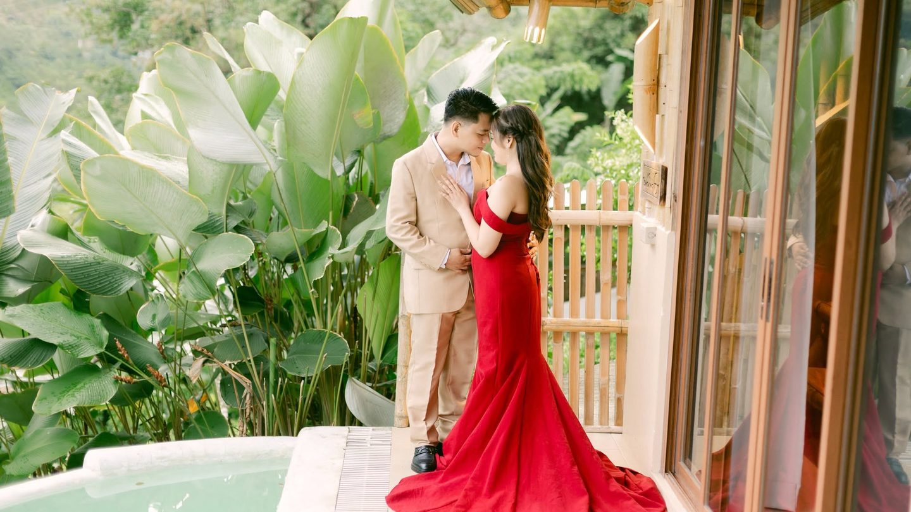
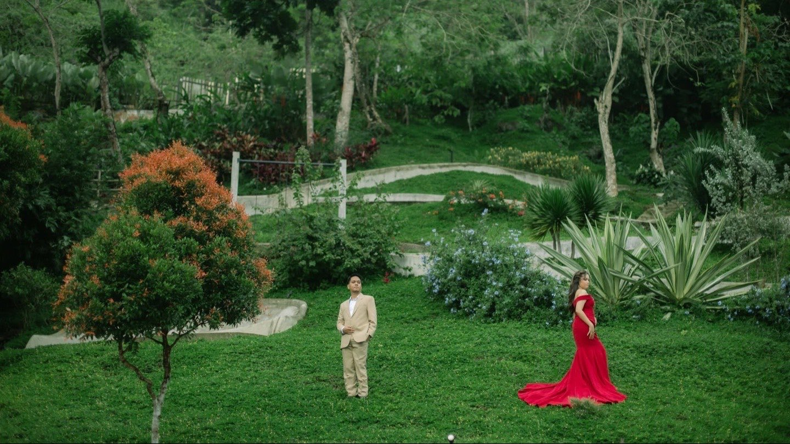
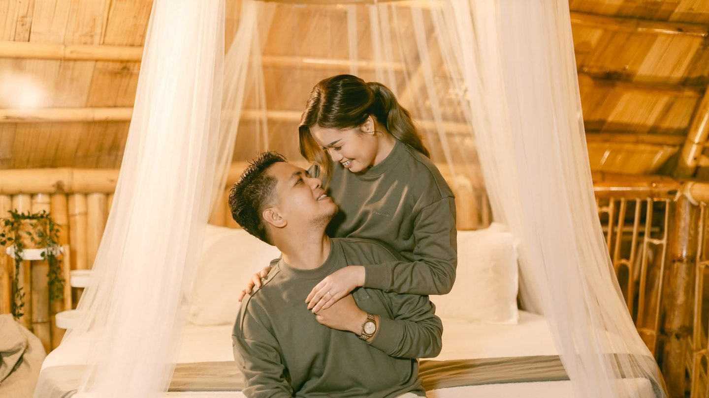
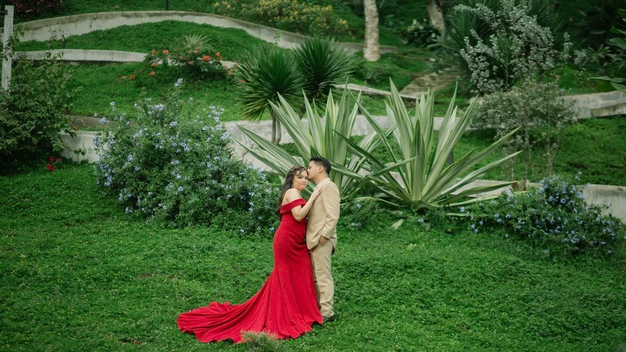
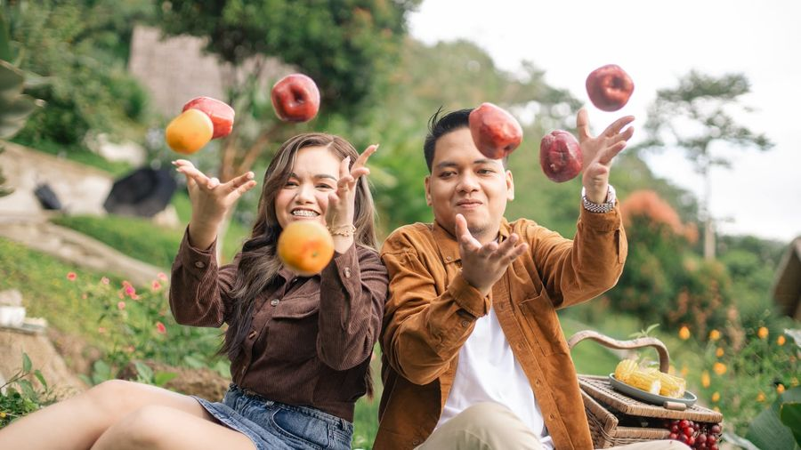
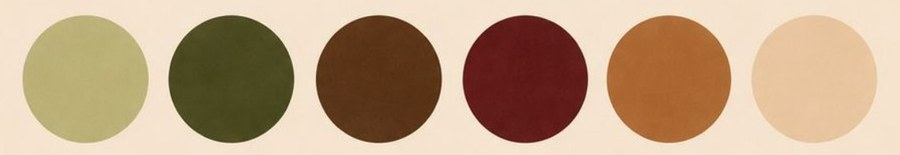
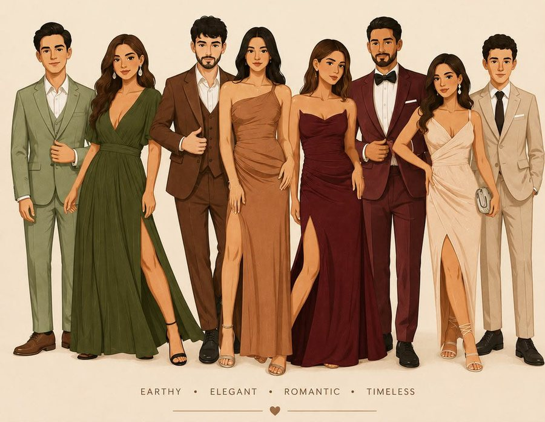

"Of all the stories in the world, we're glad ours is this one."
Cebu City · Friday, October 30, 2026
After years of choosing each other, Randy and Laurice invite you to
witness the beginning of their forever. Vows at half past two at the Archdiocesan
Shrine of St. Thérèse, Lahug — followed by dinner and dancing at
Golden Peak Hotel & Suites. All who love them are asked to come.
Full report inside ▸
Inside This Issue
Our Storyp. 1
The Programmep. 1
The Entouragep. 2
Remindersp. 2
Picture Supplementp. 2
The Venuep. 2
Kindly Replyp. 2
Replies by Pending · #RandyAndLaurice
Issue No. 1Est. 2026Printed with Love
Tap to unroll
Cebu City"Two hearts, one story"Friday, October 30, 2026
Special Edition · Celebrating the Journey of
The Wedding Times
An Invitation to Our Forever & Celebration Guide
Issue No. 1 · Est. 2026Vol. I — The Wedding EditionPrinted with Love
Exclusive Announcement — Issue No. 1
WE’RE GETTING MARRIED!
After years of choosing each other, we invite you to witness the beginning of our forever.
· October 30, 2026 ·



‖Randy & Laurice, photographed in Cebu City · 2026
The Date
October 30, 2026
Friday
Ceremony
2:30 PM
Shrine of St. Thérèse
Reception
5:00 PM
Golden Peak Hotel & Suites
RSVP By
Pending
#RandyAndLaurice
How it all began
Brought Together by Chance
By Randy & Laurice · Cebu City
We started as strangers and somehow found our way into each other’s hearts. ❤️
Our story didn’t begin perfectly, but looking back, we know that God was quietly writing
our story all along. He brought our paths together at a time we never expected, in a way
only He could.
When Randy first heard Laurice’s voice, something in his heart whispered, “I think I’ve
found my future wife.” And when Laurice first saw Randy, she felt something she couldn’t
quite explain. She didn’t think much of it at first and simply went with the flow — until
one simple message became the beginning of everything:
“Hi, dayun ta laag?” 😄
— Randy, the first message
What started as a simple friendship slowly became something deeper. We talked, laughed,
made memories, and somewhere along the way, we fell in love.
But our journey was never perfect. We faced misunderstandings, struggles, doubts, tears,
and moments when giving up felt easier than holding on. Yet through every difficult
season, we somehow found our way back to each other.
We learned that love isn’t about having a perfect story. It’s about two imperfect people
choosing each other every day — learning to forgive, understand, grow, and stay.
And through it all, God reminded us that His timing is always better than ours.
“He has made everything beautiful in its time.”
— Ecclesiastes 3:11
Maybe we didn’t have the perfect beginning, but every twist, every challenge, and every
unexpected moment brought us exactly where we are today.
From strangers, to friends, to lovers — and now, to two people ready to build a life
together.
Meet the couple
The Bride
Michelle Laurice A. De Joya
daughter of
Mr. Rey Arnel S. De Joya & Mrs. Eulogia A. De Joya
The Groom
Engr. Randy W. Odchigue
son of
Mr. Efrino G. Odchigue & Mrs. Eva W. Odchigue
Moments worth keeping
Our Story in Pictures
Randy & Laurice · Love, Illustrated

01
02
03
04
05

06
07
08
Counting down to the day
The Order of Celebration
What happens, and when
--Days
--Hours
--Minutes
--Seconds
Programme
Pending
Guests ArriveDoors open and guests are seated.
2:30 PM
The CeremonyArchdiocesan Shrine of St. Thérèse, Lahug. Kindly silence your phones.
Pending
PhotographsFamily and friends with the newlyweds.
5:00 PM
Reception & DinnerGolden Peak Hotel & Suites. Eat, drink, and dance.
Pending
Send-OffOne last song, and goodnight.
Formal & Semi-Formal
Our Colour Palette

Sage Green · Olive Green · Chocolate Brown · Burgundy · Caramel · Cream

Earthy, elegant, romantic, timeless — a guide, not a uniform.
Principal Sponsors (Gentlemen)
Barong Tagalog, black trousers and black shoes
Principal Sponsors (Ladies)
Long dress in Cream
Bridesmaids
Long dress in Burgundy
Groomsmen
Suit or Barong in Olive Green, black trousers and shoes
Guests
Ladies: long or cocktail dress in any palette colourGentlemen: Barong or suit, black trousers and shoes
Please Avoid
Denim, white, off-white, ivory, and loud prints
With love and support
Meet the Wedding Party
Standing with us
Best Man
John Rey A. De Joya
Maid of Honour
Mellen Angelie W. Odchigue
Groomsmen
Bridesmaids
Jacob A. Amenence
Rose Carmelle A. De Joya
Jansen M. Lapuag
Mary Cerila Cueva
Frank John Oslay
Anna Mae P. Branzuela
Mark Lourence D. Cuyos
Mary Joy W. Odchigue
Paul Wilmen G. De Joya
Ma. Justine Cubcuban
Notes & Reminders
On Gifts
Your presence is the gift we are really hoping for. Should you wish to give
something more, a monetary gift would be warmly appreciated.
GCash: Pending
Bank: Pending
An Unplugged Ceremony
Please keep phones and cameras away during the ceremony. Our photographers
will capture every moment.
Please Be On Time
The ceremony begins promptly at 2:30 PM. Kindly arrive well before
then so you can be comfortably seated.
An Adults-Only Reception
We adore your little ones, but we have chosen an adults-only reception so
everyone can relax and celebrate — save for those in the entourage.
Our Wedding Hashtag
#RandyAndLaurice
Tag your photos so we can relive every moment through your eyes! 📸
The picture supplement
Our Album, In Full
Randy & Laurice · every photograph we couldn’t bear to leave out
Tap any photograph to open it full size
A message from the couple
One Last Invitation
With our whole hearts
Today, we look back with grateful hearts. Grateful for the memories, the lessons, the
struggles that made us stronger, and most of all, grateful that God allowed our paths
to meet.
What began with a simple “Hi, dayun ta laag?” has brought us to a much bigger yes — yes
to forever, yes to choosing each other, and yes to a lifetime together.
“Our story may not have been perfect, but it was always ours. And
perhaps that was the beauty of it all.”
— Randy & Laurice
Our time is finally here. God brought us this far, and with Him at the center, we look
forward to everything that is still to come.
This is our story. This is our answered prayer. And this is only the beginning of our
forever. ❤️
R & L
Randy & Laurice
October 30, 2026 · Cebu City
Notes from the Archive
Years Together2 years
Became a CoupleJun 20, 2024
The ProposalSep 29, 2025
The WeddingOct 30, 2026
Where to find us
The Venues
Every detail you need
The Ceremony
Archdiocesan Shrine of St. Thérèse
Lahug, Cebu City, Philippines Friday, October 30, 2026 · 2:30 PM
Ring BearerFrancis Jose G. De JoyaCoin BearerGio G. GutierrezBible BearerZayr Aellius D. PedrozaFlower GirlsCallie Hajira A. De JoyaJulian Sophia OdchigueGabriel Evegene C. MarabilesLittle BridesJadeniña Rylie De JoyaJewelle Raisha De JoyaCandle SponsorsRyan Rey W. Odchigue & Merinold B. EllecionCord SponsorsGerald Estipona & Karen EstiponaVeil SponsorsJun Albert Pedroza & Merry Krystelle D. PedrozaOffertoryRyan Dorona · Fruits